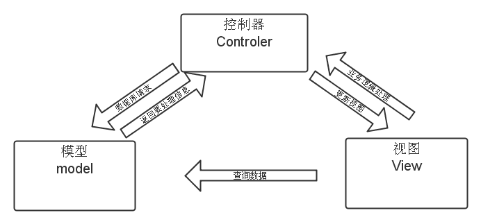

王方
在不同的框架中，还会有其它的设计模式的体现，并不仅限于上面提到的三种模式
策略模式属于对象的行为模式。其用意是针对一组算法，将每一个算法封装到具有共同接口的独立的类中， 从而使得它们可以相互替换。策略模式使得算法可以在不影响到客户端的情况下发生变化。
很多公司的年终奖是根据员工的工资基数和年底绩效情况来发放的。例如，绩效为S的人年终奖有4倍工资， 绩效为A的人年终奖有3倍工资，而绩效为B的人年终奖是2倍工资。假设财务部要求我们提供一段代码， 来方便他们计算员工的年终奖。
var calculateBonus = function( performanceLevel, salary ){
if ( performanceLevel === 'S' ){
return salary * 4;
}
if ( performanceLevel === 'A' ){
return salary * 3;
}
if ( performanceLevel === 'B' ){
return salary * 2;
}
};
calculateBonus( 'B', 20000 ); // 输出：40000
calculateBonus( 'S', 6000 ); // 输出：24000
//定义一个策略类
var strategies = {
"S": function( salary ){
return salary * 4;
},
"A": function( salary ){
return salary * 3;
},
"B": function( salary ){
return salary * 2;
}
};
// 定义Context环境类，维持对策略对象的引用
var calculateBonus = function( level, salary ){
return strategies[ level ]( salary );
};
// 实际调用
console.log( calculateBonus( 'S', 20000 ) ); // 输出： 80000
console.log( calculateBonus( 'A', 10000 ) ); // 输出： 30000
针对不同的具体策略类，环境角色执行了不同的策略方法。 当我们日后需要增加新的策略时，我们只需要新建一个具体的策略类来实现抽象策略接口即可
有时被称作发布/订阅模式，观察者模式定义了一种一对多的依赖关系，让多个观察者对象同时监听某一个主题对象。 这个主题对象在状态发生变化时，会通知所有观察者对象，使它们能够自动更新自己。
在Java中通过Observable类和Observer接口实现了观察者模式。一个Observer对象监视着一个Observable对象的变化， 当Observable对象发生变化时，Observer得到通知，就可以进行相应的工作。
在ng中实现观察者模式的体现是我们在项目中建立了不同的作用域， 有父级，子级，兄弟级，ng在不同的作用域之间数据传递或者事件渲染定义好了方法
1.$emit向parent controller（父级controller）传递event与data
2.$broadcast向child controller（子集controller）传递event与data
3.$on用于接收event
4.deregister()用于销毁事件符合前端端情的MVC
做法
把数据请求和数据操作放在model中
对视图的操作和改变放在view中
事件绑定放controller中
优点
可以由不同的人并行推进对model和view的内部实现，而不关心对方怎么实现， 只管负责自己内部的实现并抛出事件，并约定好通过事件所传递的数据的格式即可，就像前端和后端的分离那样。
从容应对灵活多变的业务需求，只要在controler中修改所绑定的事件名和实现相应操作的回调函数即可。 controler要做的就是做决定：决定在哪个事件被抛出时，调用实现哪个操作的方法。
可以很方便的卸载、装载以及修改各个特性。
来看看Backbone吧
在backbone.js中，你可以把数据作为Model，即通过Model你可以创建数据，进行数据验证，销毁或者保存到服务器上。当界面上的操作引起model中属性的变化时，model会触发change的事件。那些用来显示model状态的views会接受到model触发change的消息，进而发出对应的响应，并且重新渲染新的数据到界面。
backbone.js涉及到三个部分，即view、model、collection。model代表一个数据模型，collection是模型的一个集合，而view是用来处理页面以及简单的页面逻辑的。
route的使用
var AppRouter = Backbone.Router.extend({
routes : {
'' : 'main',
'topic' : 'renderList',
'topic/:id' : 'renderDetail',
'*error' : 'renderError'
},
main : function() {
console.log('应用入口方法');
},
renderList : function() {
console.log('渲染列表方法');
},
renderDetail : function(id) {
console.log('渲染详情方法, id为: ' + id);
},
renderError : function(error) {
console.log('URL错误, 错误信息: ' + error);
}
});
var router = new AppRouter();
Backbone.history.start();
var ListView = Backbone.View.extend({
tagName : 'div',
className : 'listview',
id : 'list',
attributes : {
title : '列表',
style : 'color:red'
},
pageInit ： function(){
this.listenTo(this.model,'all',this.render());
}
events : {
//点击某个dom节点，进行对应的事件处理
'click #dom domclicked'
},
domclicked : function(){
//code something
}
render : function() {
this.el.innerHTML = 'Hello World!';
document.body.appendChild(this.el);
}
});
var listview = new ListView();
listview.render();
// 定义Book模型类
var Book = Backbone.Model.extend({
validate : function(data) {
if(data.price < 1) {
return '书籍价格不应低于1元.';
}
return false;
}
});
var javabook = new Book({
price : 50
});
// 监听error事件，当验证失败时触发
javabook.on('error', function(model, error) {
console.log(error);
});
// 在调用set()方法时，传递了一个配置对象，包含自定义的error处理方法
javabook.set('price', 0, {
error : function(model, error) {
console.log('自定义错误：' + error);
}
});
第一，简单，思想不错，用多了对自己写代码肯定有帮助
第二，自由，很多地方需要自己去操作DOM，自己向里面添加框架，插件，更多的需要自己去实现
再看看angular
脏检查机制：Angular将双向绑定转换为一堆watch表达式，然后递归这些表达式检查是否发生过变化， 如果变了则执行相应的watcher函数（指view上的指令，如ng-bind，ng-show等或是{{}}）。 等到model中的值不再发生变化，也就不会再有watcher被触发，一个完整的digest循环就完成了
如果执行了一次digest循环后某个值发生了变化， 那么AngularJS会再次循环，直至不再有任何变化。这是因为你在$watch中更新某个值，如果该值对应的$watch已在这遍循环通过， AngularJS将检测不到变化无法更新。如果循环运行了10次或更多次，AngularJS会抛出异常并停止。
function PetKeeper(pet) {
this.pet = pet;
}
PetKeeper.prototype.feed = function(food) {
this.pet.eat(food);
};
function Pet(type) {
this.type = type;
}
Pet.prototype.eat = function(food) {
alert("I am a " + this.type + ", I'm eating " + food);
};
var tom = new Pet("cat");
var jerry = new Pet("mouse");
var keeper = new PetKeeper(tom);
keeper.feed("fish");
keeper.pet = jerry;
keeper.feed("rice");
pet是外部注入的，在feed函数定义里，并不知道pet到底是什么， 只有当它被调用的时候，才知道pet是什么。如果是在Petkeeper中去创建，就会对pet产生依赖，不利于解耦
数组标注：最常用且推荐的方式。例如：
myApp.controller('smallCatCtrl', ['$scope', function($scope){
$scope.sayCat = function(){
alert('I Love Circle!');
}
}]);
$inject属性标注：这种方式通过工厂方法的$inject属性声明依赖的组件， 主要用于js被压缩/混淆时，变量被重命名的情况。
var MyController = function($scope, myService) {
// ...
}
MyController.$inject = ['$scope', 'myService'];
myApp.controller('MyController', MyController);
angular的优点
1.模块功能强大，丰富的angular指令
2.自定义Directive，比jQuery插件还灵活
3.和HTML结合在一起写逻辑. HTML结构有清晰的划分.
4.ng模块化引入了Java的一些东西（依赖注入），能够很容易的写出可复用的代码
5.不依赖第三方库
angular的劣势
1.兼容性较差，适用于IE9以上，更适合于移动端
2.对SEO不友好
3.数据绑定使得 Bug 很难被调试。你看到界面异常了，有可能是你
View 的代码有 Bug，也可能是 Model 的代码有问题。数据绑定使得
一个位置的 Bug 被快速传递到别的位置，要定位原始出问题的地方就变得不那么容易了。
4.对于特别复杂的应用场景，性能存在问题,数据绑定需要花费更多的内存。
Web构建的思考
状态
组织
效率
状态
在一个业务界面中，我们可能会根据某些数据去生成一块界面，然后通过界面上的某些操作， 改变一些数据，从而影响界面的另外一些部分。
一种是从数据到界面，一种是从界面到数据。能够描述界面当前状况的数据，就可以被称为状态， 不对状态抽象会引起逻辑复杂
如果不对状态出抽象，就会导致逻辑的混乱，比如一个地方变了，要改动多处的代码，如果代码 直接写，很容易出现问题
MVVM流，通过类似模板的语法，描述页面状态与数据的绑定关系，通过内部转换，把这个结构建立 起来，React采用了函数式流派，推崇单向数据流，给定原始界面（或数据），施加一个变化，就能推导 出另外一个状态（界面或者数据的更新）。
组织
模块关系以及业务模型
解决模块关系的呢？共识就是组件化。整个应用形成倒置的组件树，每个组件提供对外接口，然后内部只关注自己的实现，但实际做的时候还是有非常多需要考虑的东西，包括组件的定义，约束，管理，测试等等，
效率
开发效率以及运行效率
组件化，这是提升开发效率的一种手段，在组件化这个点上，各路框架的组织方式大同小异，反正最终都是组件树。
运行效率的另外一面主要是创建和修改DOM，在创建上，各大框架没有太大差异的，而在修改DOM的时候，React首创的虚拟DOM有很大优势
能解决痛点即是选择的初衷
MVC只是过程，而不是结果，不能为了MVC而MVC
参考文献
谢谢观赏